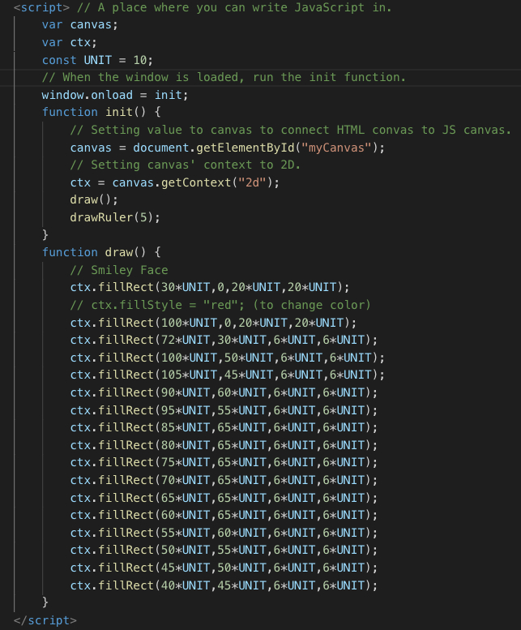
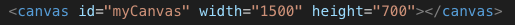

The Script element allows you to have Javascript in your HTML file.
The Canvas element allows you to to draw 2D shapes by using Javascript
A container for graphics, which are created using Javascript
ctx stands for context, and it can be used to set the canvas context to 2D
Now the context of the canvas is going to be in 2D
When the window is loaded, it will run the init function
It fills pixels with a color to create a image.
In this example it is drawing a rectangle in a specific location and size
You can use ctx.fillStyle to change the colour of the rectangle you are drawing on the canvas
unit is a constant that you can assign a numerical number to simplify coding.
If you wanted to make this rectangle smaller, you can just change the unit to 5, which will multipy each number by 5 instead of 10